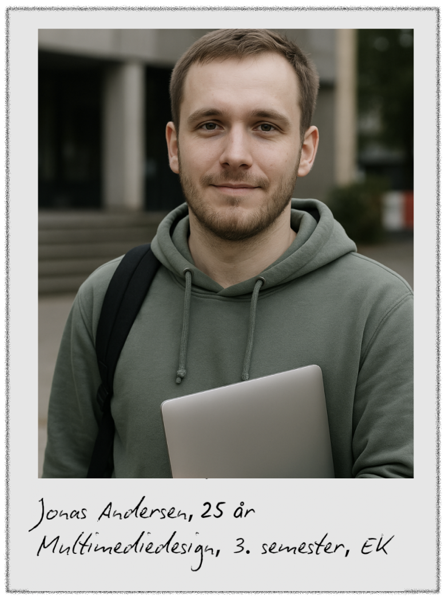
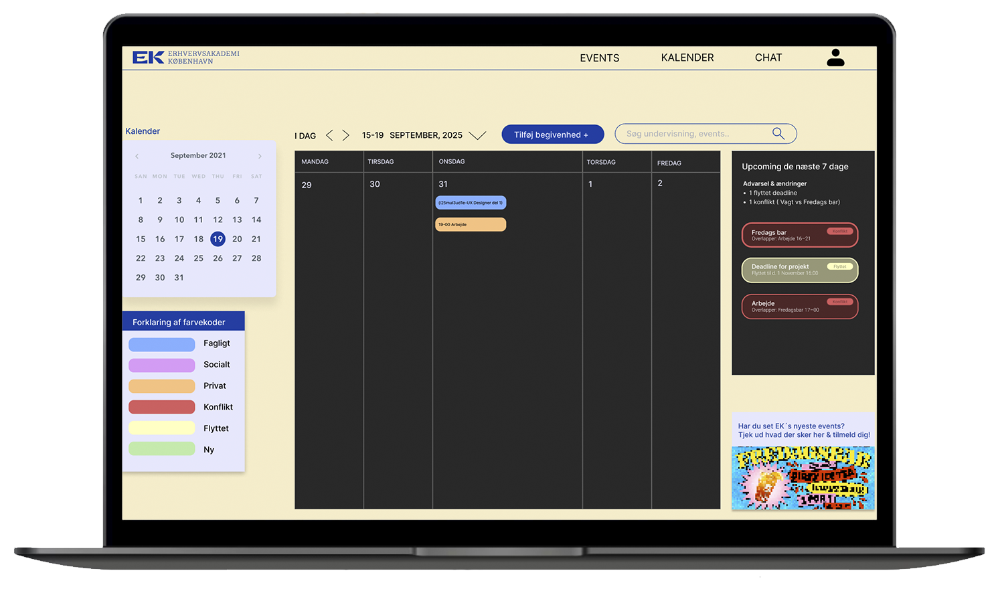

Fællesskab, events og buddy-match – med bæredygtige valg i design og kode
Vi byggede en social platform for Erhvervsakademi København med fokus på fællesskab og let adgang til sociale aktiviteter.
Løsningen blev udviklet i HTML, CSS, JavaScript og figma, med inspiration fra Teams’ funktioner – men designet fra bunden.
De studerende var spredt over mange systemer (Teams, moodle, mails), og sociale aktiviteter druknede i støj.
Vi ville samle overblik og gøre det nemt at opdage og tilmelde sig relevante events – på en måde der føles tryg og enkel.
Mød vores personaer
Vil hurtigt ind i fællesskabet og finde lave-barriere events uden at det drukner i mange kanaler.
Behov
RSVP i 1 klik → kalender.
Hurtig buddy/gruppe-match.
Se hvem deltager (tryg start).
Udfordringer
Info spredt i Teams/ekstrasites.
Svært at tage første skridt på stor skole.

Savner overblik over aktiviteter på tværs og et sted hvor socialt og fagligt spiller enkelt sammen.
Behov
Klart, tekstbaseret event-list.
Grupper/sparring på tværs af linjer.
Kalender-synk & konfliktadvarsel.
Udfordringer
Events kommunikeres sent/uklart.
Mange kanaler → manglende overblik.
Fælles indsigt: Ét samlet overblik, tryg start og lav friktion i UI’et.
Løsningen
En enkel platform med fokus på sociale events, buddy-match og en overskuelig kalender.
Vi brugte en dark mode-toggle, letvægtige assets og undgik støj for at støtte både tilgængelighed og bæredygtighed.
Research & afklaring
Vi arbejdede fra hurtige indsigter → HMW → user stories → dot-voting for at fokusere på det vigtigste:
samlet overblik, tryg start, kalender-synk og nem event-tilmelding.
Kommenteret wireframe
Vi lavede kommenterede wireframes for hele siden (events, kalender, chat, buddy-match).
Her viser jeg et kort eksempel for at illustrere, hvordan vi placerede forklaringer og handlinger,
særligt omkring event-tilmelding og RSVP → kalender.
Wireframe-udsnit: hvor forklaringer, fejltilstande og “næste skridt” skulle ligge i det endelige UI.
Prototype 1 & kodet build
Prototype 1 samlede de vigtigste skærme og blev derefter bygget i en let kodet version (samme UI som v1)
for at mærke hastighed og interaktion. Vi optimerede koden med bl.a. WebP/SVG-assets,
minificeret CSS/JS, kritisk CSS og lazy-loading af billeder.

Microcopy & lette assets
Vi finpudsede microcopy på tværs af forside, kalender og chat, så næste skridt altid er tydeligt. Klare primær-CTA’er
som “Udforsk events” og “Åbn kalender” leder ind i flowet, badges og små inline-forklaringer gør det klart, hvad en
konflikt betyder – og hvad man gør ved den – mens “hvem deltager” og RSVP-tekster er skrevet i aktivt sprog og
placeret helt tæt på handlingen. Korte status-tekster i chat og sektionen “Denne uge” fjerner tvivl, så brugeren uden
anstrengelse ved, hvad der sker nu, og hvad de kan gøre bagefter.
Eksempler på microcopy (RSVP, konflikter, buddy-match).Lette assets (WebP) for hurtigere indlæsning.
Brugertest & iteration
Vi testede med 3 studerende: først på Prototype 1, dernæst på den kodede version (samme som v1),
og til sidst på Prototype 2. Vi undersøgte bl.a. event-discovery, navigation mellem kalender/event/chat
og hvor klart “næste skridt” var formuleret.
Opsamling: testspørgsmål, mål, det der virkede, pain points og citater.
Testen pegede på tre ting: kalenderen skulle være mere læsbar, konflikt-løsning manglede forklaring,
og event-discovery skulle være lettere.
På baggrund af testen skærpede vi læseligheden i kalenderen,
lagde forklaring på konflikt-løsning direkte i UI’et og arbejdede målrettet med
microcopy, så “næste skridt” altid er tydeligt (tilmeld, gem, kontakt, osv.).
Konklusion & læring
Et samlet overblik giver først rigtig værdi, når sproget og flowet er friktionsfrit. Vores største løft kom ikke fra
flere features, men fra tydelig microcopy, simple lister frem for tunge visninger og konsekvente mønstre for feedback. Resultatet er en roligere start for nye studerende og en hurtigere vej til
deltagelse i fællesskabet. I fremtiden ville v gerne bygge videre på
kalender-synk og buddy-match.